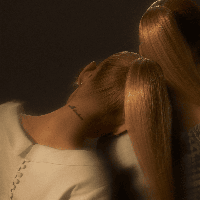
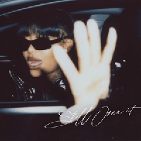
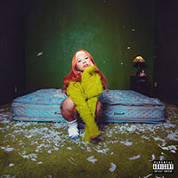
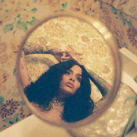
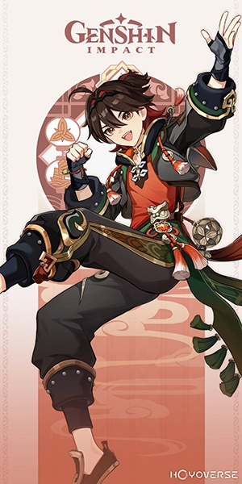
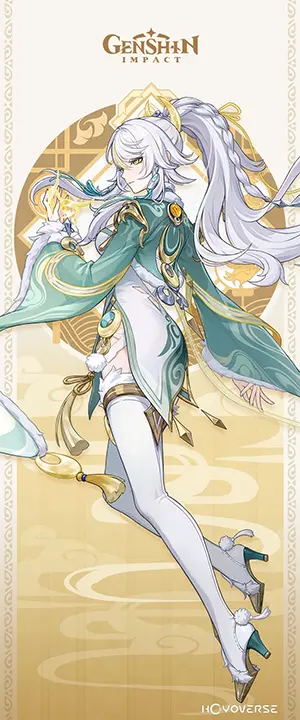
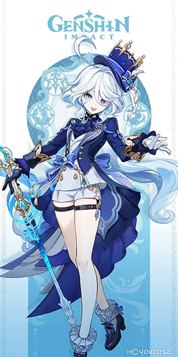
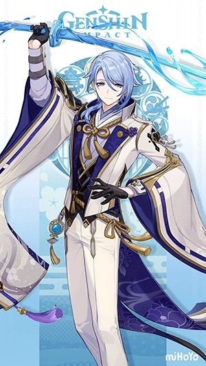

Ariana Grande: "eternal sunshine"
The album that I listen to everyday, created by my favorite artists of
ALL time.
Favorite song: intro (end of the world)
NIKI: "Nicole"
Another album that has gotten me though the tough times. Saw her on tour for this album twice and would love to see her again.
Favorite song: Take A Chance With Me

Summer Walker: "Still Over It"
In 2021, I hit one of my hardest rock bottoms mentally, even dropping out of SF State at the time, and this album truly saved my life at the time.
Favorite song: Session 33

Thuy: "wings"
This album is more a comfort album for me, but also a testimate for Thuy's career. Growing from small artist from the Bay Area, to successful artist in the Industry.
Favorite song: Cloud 11

Kehlani "While We Wait"
An album that defined my high school years, listening to it everyday on the way to school, during school, and on the way home from school. My personal favorite work from Kehlani.
Favorite song: Footsteps feat. Musiq Soulchild

Gaming
My favoite 4 star character! As well as my favorite design in Genshin Impact, Being based on Chinese lion dancing!

Zibai
My latest 5 star, as well as my strongest character.

Furina
My favorite god in the game, being also one of the best written characters in Genshin Impact, touching on themes of depression, anxiety, and much more.

Kamisato Ayato
Nothing special about him besides I like his design and find him as the hottest character in the game.